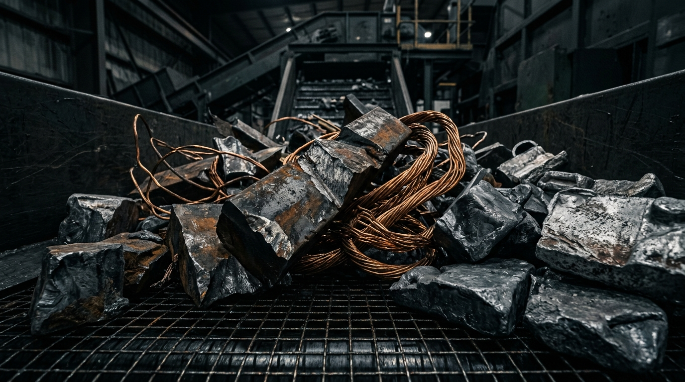
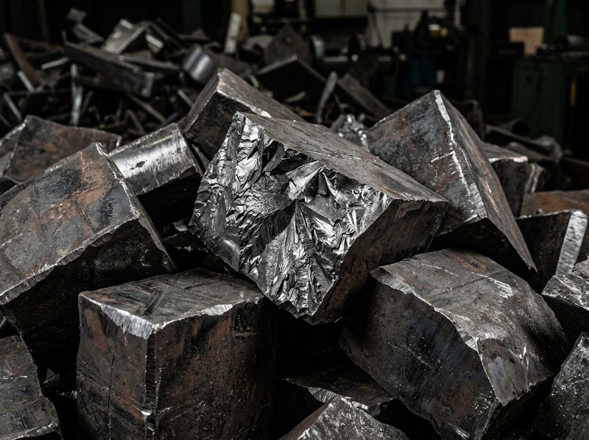
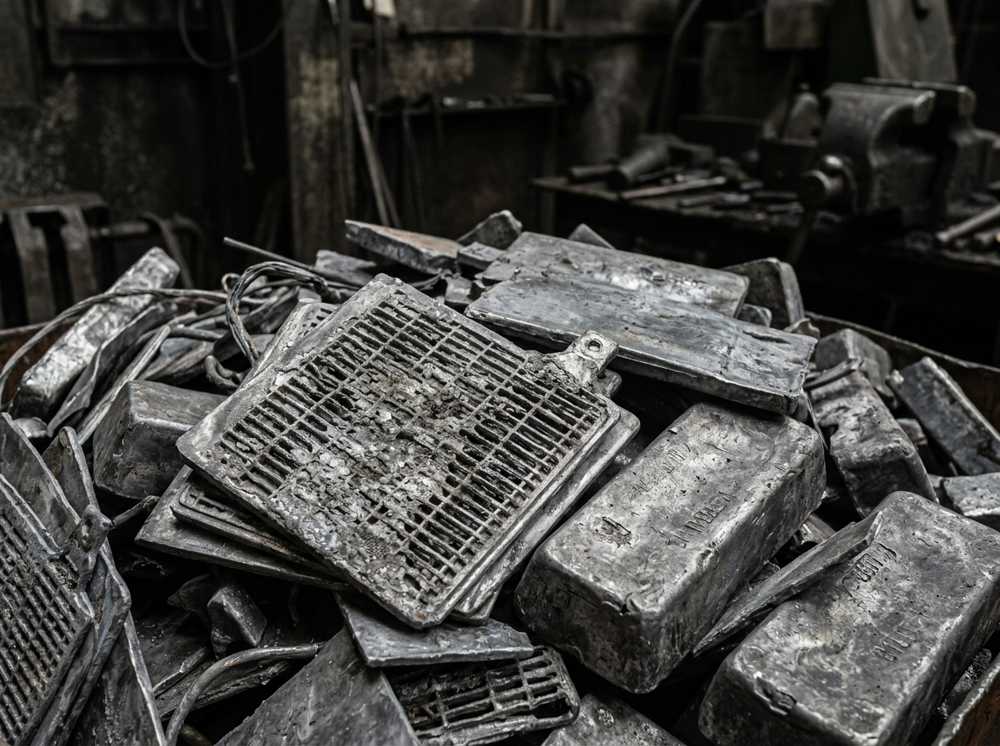

01 / BOTTLENECK
01 / 07
MANUAL MATERIAL IDENTIFICATION
Visual inspection at the yard gate remains largely subjective, leading to inconsistent material classification.

Visual inspection at the yard gate remains largely subjective, leading to inconsistent material classification.
Critical grading knowledge is concentrated in a few veteran sorters rather than systematic digital records.
Prices are negotiated on gut feeling rather than verified purity, density, and recovery yield profiles.
Mixed scrap piles require multiple labor-intensive sorting cycles before achieving processing readiness.
Recyclers lack clear compositional visibility into received inbound loads until melt-loss is calculated.
Sensing data exists in silos across scales, clipboards, and informal phone notes rather than unified manifests.
Hours spent manually grading and estimating scrap slow vehicle turnaround and hold up working capital.
Revore Tech is designed to transform physical material into structured, actionable digital information at the moment of intake.
A scroll-driven progression that moves material from raw physical chaos into clean operational value.
Scan the physical material using the Revore Tech system across designated intake points.
Our intelligence systems analyze the captured optical and material values to determine category.
The system evaluates relevant surface characteristics and assigns the applicable industrial grade.
Using material class, estimated weight, grade, and recovery potential, the system models valuation.
The assessment becomes structured digital data that can be retained, queried, and verified.
Use verified intelligence to support selling, foundry processing, documentation, and tracking.
We don't just ask,
“What is this worth?”
A material's value can depend on much more than its name.


Material intelligence shouldn't stop at identification. It powers transactions, documentation, and movement.
Building direction: Future ecosystem workflows will bridge digital manifests with automated verification and trade settlement.
Built with enterprise confidentiality in mind. Your material throughput data, pricing formulas, and supplier metrics belong strictly to the business generating them.
Revore Tech is designed to keep customer operational data confidential and secure. Customer material data is not used to train models without explicit authorization.
Revore Tech is currently in the testing phase, working alongside recycling yards, foundries, and scrap processors to develop and validate the technology in real-world operating environments.
Build with the people who handle materials every day.
Building the material intelligence layer for the recycling ecosystem.
Sivanadian studied Business Administration with a focus on Operations and Decision Technologies at the University of California, Irvine. His focus is on building technology that makes complex operational systems more efficient, measurable, and data-driven.
Jimstel studied at Ponjesly College of Engineering, Kanyakumari, and leads the technology and engineering direction behind Revore Tech's material intelligence platform.
Materials are variable. Their composition, quality, recovery potential, and value can change from one piece to another.
Our long-term vision is to build a material-intelligent layer capable of understanding the nature, composition, variability, and value of materials wherever they exist.
Today, that starts with recycling. Tomorrow, it can extend far beyond it.